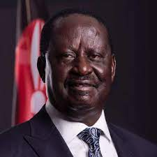
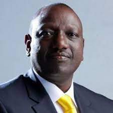

Raila Amolo Ondinga
Raila Amolo Odinga is a Kenyan politician, former Member of Parliament for Langata and businessman who served as the Prime Minister of Kenya from 2008 to 2013. He is assumed to be the Leader of Opposition in Kenya since 2013
- Born: January 7, 1945 (age 77), Maseno
- Spouse: Ida Odinga
- Education: Technical University of Magdeburg (1965-1970)

William Ruto; is a Kenyan politician currently serving as Deputy President of Kenya since April 2013. On 15 March 2022, Ruto was endorsed by UDA as the party's presidential candidate for Kenya's presidential election set for August 2022
William Ruto
William Ruto; is a Kenyan politician currently serving as Deputy President of Kenya since April 2013. On 15 March 2022, Ruto was endorsed by UDA as the party's presidential candidate for Kenya's presidential election set for August 2022
- Born: December 21, 1966 (age 55), Kamagut
- Full name: William Samoei Arap Ruto
- Spouse: Rachel Ruto
- Education: BSc in Botany and Zoology from the University of Nairobi (1990)

Prof George Luchiri Wajackoyah
Prof George Luchiri Wajackoyahs a Kenyan politician, lawyer, priest, and educationist. He is best known as the leader of the Roots Party, a political party in Kenya championing the legalization of bhang. Wajackoyah has an impressive resume and has used his law firm to represent some of the most influential people in society..
- Born: October 24, 1959 (age 63), Matungu,
- Education: University of Wolver Hampton the UK Law(1996), master of law development from the University of Warwick(1998), Master of law University of Baltimore(2006)
- Spouse: Meller Lee Cheatham
DAVID MWAURE WAIHIGA
DAVID MWAURE WAIHIGA is a Kenyan presidential candidate who is also a minister
- Full name: DAVID MWAURE WAIHIGA
- Spouse: Lady Justice Anna Ngibuini Mwaure
- Spouse: University of Nairobi, International Leadership University